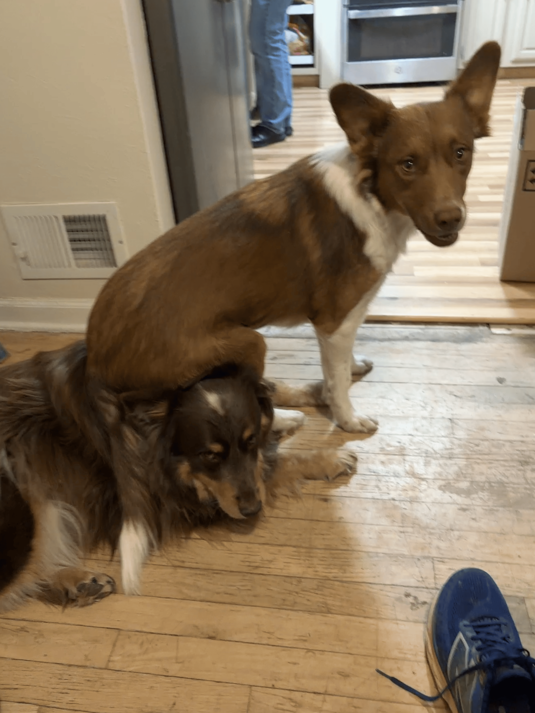

Welcome to my Hobby Page
Home
Education
Hobbies
Running
Hobbies
I am a outdoorsy person, not for chaotic crazy time, but for peace and quiet.
Although, I have 3 dogs to keep it interesting, here is Charlie sitting on Bella...

Some of my hobbies include:
Hiking
I have hiked two 14ers and weedwacked many mountains, I love going in waterfalls on mountains.
Running
I enjoy running especially up mountains on trails, but also competitively.
Puzzles
I love doing hard big puzzles and computer puzzles too.